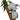

Please consider donating :)
LightNevaeh
M3rchant
Tootmetoota
CatatonicFrost
CoolidgeHD
ExoticKitten
StreamKoala
StreamKoala is a webpage made for streamers to have open on another monitor or a tablet. It consolidates the information you need for your stream and leaves out the stuff you don't need to worry about.
It is designed and intended to be used on the latest version of Chrome. It is also intended to be used with BTTV's dark theme and TwitchAlerts.
Features
- Twitch Chat window that shows emotes, who's hosting you, and works with BTTV.
- Chat viewers list with total followers and total logged-in viewers.
- TwitchAlerts "Recent Events" window that shows your most recent followers, subs, and donations via Twitch Alerts.
- A video of your stream.
- A second Twitch stream for including VOD-friendly music into your stream, such as from Monstercat, NoCopyrightSounds, or Rhymesayers.
- The above modules can be rearranged by dragging their header.
- Update your game being played.
- Update your stream title.
- Works with tablets and phones, but the two twitch streams won't be available.
- No data is collected nor stored on the server.
- No cookies are stored on the user's computer.
- Only asks for permission to update your stream metadata from Twitch. This site has no other permissions.
- StreamKoala is free and always will be free. The source code is even available on github (if that wasn't obvious already).
How to use StreamKoala
Just click on the "Connect with Twitch" button on the top left and everything else should be self-explanatory!
Change log
10 Nov 2015 - Site is... live?
Quirks and bugs
- Setting the game or stream title is instantaneous to stream viewers, but takes a minute or so to update on StreamKoala. This is a limitation of the Twitch API.
- The viewers list doesn't update instantaneously, but it does update regularly. A Twitch API limitation.
- The number of followers updates quicker than on the actual stream page, but also doesn't update immediately. Another Twitch API limitation.
- Moving the chat module will cause it to refresh. To work around this, either re-arrange your modules before the stream starts, or move the other modules around the chat window. The videos and TwitchAlerts will also refresh if moved, but you won't lose anything when doing so.
- If you find any more bugs or want to see more features added, contact me via Twitch message.